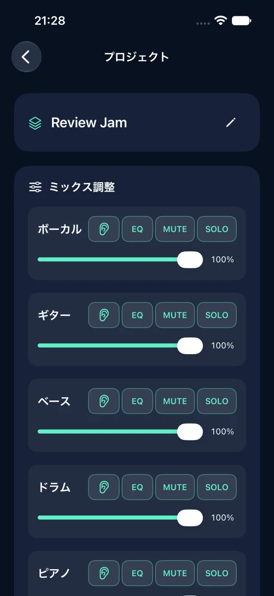
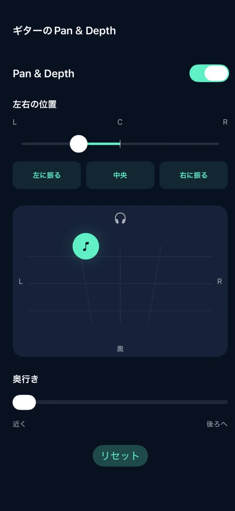
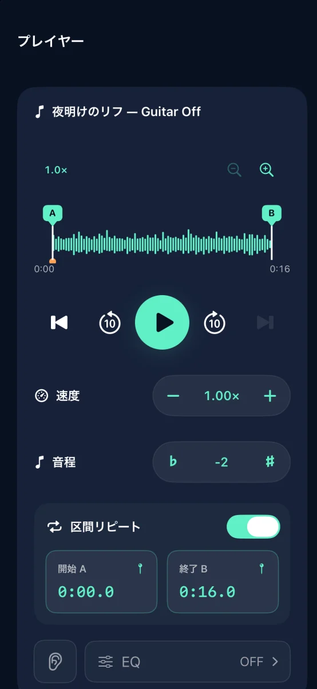

練習したい曲を取り込む
「ファイル」の音声・動画、「写真」の動画、対応するミュージックライブラリの音源を取り込めます。波形や動画のサムネイルを見ながら、分離したい区間の開始・終了を指定できます。
iPhone向け 音源分離・練習アプリ

いつもの曲から、自分のパートを下げる。残ったバンドの音に、あなたの演奏を重ねよう。
App Store公開準備中




ギターを下げて、バッキングに。
ベースだけを聴いて、フレーズの確認に。
6つのパートから、練習に合うバランスへ。


「ファイル」の音声・動画、「写真」の動画、対応するミュージックライブラリの音源を取り込めます。波形や動画のサムネイルを見ながら、分離したい区間の開始・終了を指定できます。
選んだ区間をiPhoneの中で6パートに分離。パートごとに音量・MUTE・SOLO・EQ・音の位置を調整できます。
苦手な箇所はA–Bリピートで反復。速度と音程を別々に調整でき、カウントインで弾き始めのタイミングをつかめます。

調整したミックスをM4A / MP3 / WAVで保存・共有。動画から作ったプロジェクトは、調整した音声を元の映像と合わせて書き出せます。
プロジェクトを開けば、バランスを変えてまた練習できます。

iPhone Duo対応
iPhone Duoを開くと、広い画面を左右に分けて表示します。
セッション一覧とプレーヤーを並べて、曲を選びながら速度や音程を調整できます。

iPhoneのマナーモード（消音モード）、または集中モードの利用をおすすめします。Band Session Makerの使用中だけ自動で切り替えたい場合は、次のように設定できます。
Band Session Makerを開いている間、自動で集中モードを有効にできます。通知の許可設定や繰り返しの着信などの設定によっては、着信・通知が届く場合があります。
ストリーミング楽曲やDRMで保護された音源は分離対象にできません。取り込めるのは、利用可能な音声・動画ファイルや、端末へダウンロード済みで読み込み可能なライブラリ音源です。購入済みでも保護・保存状態によって読み込めない場合があります。
音源によって分離の仕上がりは異なります。他パートの音が混ざる、元の楽器の音が残る、音質が変化する場合があります。
iOS 18以降のiPhone向けです。ダウンロードは無料で、音源分離を3回お試しいただけます。アプリ内の買い切り購入で分離回数の上限を解除できます。日本での価格は税込1,000円です。処理時間や扱える音源の長さは、端末の性能・空き容量・温度等によって異なります。
音源の権利は元の権利者に帰属します。本アプリは、加工・共有・公開に必要な許諾を付与しません。ご自身が利用する権利を持つ音源をお使いください。